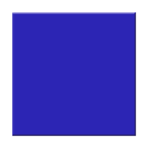
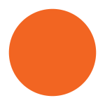

<!DOCTYPE html>
<html>
  <head>
    <title>My experiment</title>
    <script src="jspsych/jspsych.js"></script>
    <script src="jspsych/plugin-html-keyboard-response.js"></script>
    <script src="jspsych/plugin-image-keyboard-response.js"></script>
    <script src="jspsych/plugin-preload.js"></script>
    <link href="jspsych/jspsych.css" rel="stylesheet" type="text/css" />
  </head>
  <body></body>
  <script>

    var jsPsych = initJsPsych({
      on_finish: function() {
        jsPsych.data.displayData();
      }
    });
    
    var timeline = [];

    var preload = {
      type: jsPsychPreload,
      images: ['img/blue.png', 'img/orange.png']
    };
    timeline.push(preload);

    var welcome = {
      type: jsPsychHtmlKeyboardResponse,
      stimulus: "Welcome to the experiment. Press any key to begin."
    };
    timeline.push(welcome);

    var instructions = {
      type: jsPsychHtmlKeyboardResponse,
      stimulus: `
        <p>In this experiment, a shape will appear in the center 
        of the screen.</p><p>If the shape is a <strong>blue square</strong>, 
        press the letter F on the keyboard as fast as you can.</p>
        <p>If the shape is an <strong>orange circle</strong>, press the letter J 
        as fast as you can.</p>
        <div style='width: 700px;'>
        <div style='float: left;'></img>
        <p class='small'><strong>Press the F key</strong></p></div>
        <div style='float: right;'></img>
        <p class='small'><strong>Press the J key</strong></p></div>
        </div>
        <p>Press any key to begin.</p>
      `,
      post_trial_gap: 2000
    };
    timeline.push(instructions);

    var test_stimuli = [
      { stimulus: "img/bluesquare.png", correct_response: 'f'},
      { stimulus: "img/orangecircle.png", correct_response: 'j'}
    ];

    var fixation = {
      type: jsPsychHtmlKeyboardResponse,
      stimulus: '<div style="font-size:60px;">+</div>',
      choices: "NO_KEYS",
      trial_duration: function(){
        return jsPsych.randomization.sampleWithoutReplacement([250, 500, 750, 1000, 1250, 1500, 1750, 2000], 1)[0];
      },
      data: {
        task: 'fixation'
      }
    };

    var test = {
      type: jsPsychImageKeyboardResponse,
      stimulus: jsPsych.timelineVariable('stimulus'),
      choices: ['f', 'j'],
      data: {
        task: 'response',
        correct_response: jsPsych.timelineVariable('correct_response')
      },
      on_finish: function(data){
        data.correct = jsPsych.pluginAPI.compareKeys(data.response, data.correct_response);
      }
    };

    var test_procedure = {
      timeline: [fixation, test],
      timeline_variables: test_stimuli,
      randomize_order: true,
      repetitions: 5
    };
    timeline.push(test_procedure);
    
    var debrief_block = {
      type: jsPsychHtmlKeyboardResponse,
      stimulus: function() {
        
        var trials = jsPsych.data.get().filter({task: 'response'});
        var correct_trials = trials.filter({correct: true});
        var accuracy = Math.round(correct_trials.count() / trials.count() * 100);
        var rt = Math.round(correct_trials.select('rt').mean());
        
        var blue_correct = correct_trials.filter({correct_response: 'f'});
        var orange_correct = correct_trials.filter({correct_response: 'j'});
        
        var blue_rt = Math.round(blue_correct.select('rt').mean());
        var orange_rt = Math.round(orange_correct.select('rt').mean());
        var orange_faster = ((Math.round((blue_rt / orange_rt) *100))/100);
        var blue_faster = ((Math.round((orange_rt / blue_rt) *100))/100);
        
        if (blue_rt > orange_rt) {
        return `<p>You responded correctly on ${accuracy}% of the trials.</p>
          <p>Your average response time (rt) was ${rt}ms.</p>
          <p>Average <strong>blue square rt = ${blue_rt}ms</strong> vs. Average <strong>orange circle rt = ${orange_rt}ms</strong></p>
          <p>You were <strong>${orange_faster} times faster on orange circle trials</strong> than blue square trials.</p>
          <p>Press any key to complete the experiment. Thank you!</p>`} else {
            return `<p>You responded correctly on ${accuracy}% of the trials.</p>
          <p>Your average response time (rt) was ${rt}ms.</p>
          <p>Average <strong>blue square rt = ${blue_rt}ms</strong> vs. Average <strong>orange circle rt = ${orange_rt}ms</strong></p>
          <p>You were <strong>${blue_faster} times faster on blue square trials</strong> than orange circle trials.</p>
          <p>Press any key to complete the experiment. Thank you!</p>`};

      }
};
timeline.push(debrief_block);


    jsPsych.run(timeline);

  </script>
</html>
 